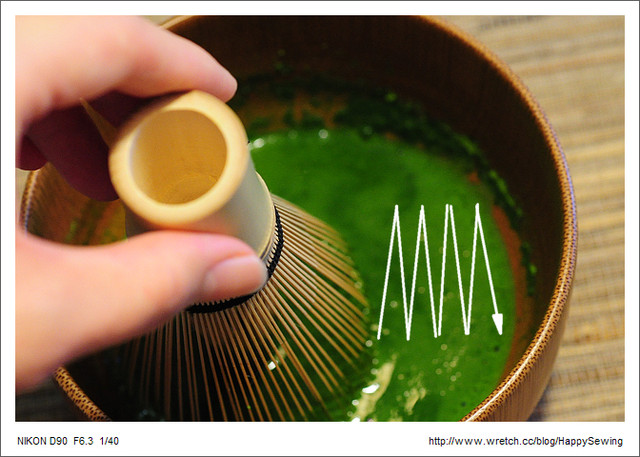

抹茶起源於中國的隋朝，在唐朝、宋朝達到頂峰，特別在宋朝，已經有了完整的寺院抹茶茶道（點茶）。至今已有一千多年的歷史。明朝以來，中國開始流行用茶葉泡湯棄渣的喝法，點茶便告失傳，傳統茶磨也隨之絕跡。九世紀末（日本的平安中期）抹茶隨日本遣唐使進入日本，點茶被日本人民所接受並推崇，發展成為今天的日本茶道。抹茶的原料是一種沒有經過揉捻的小茶片，在日本，由於多年的改良，綠茶已經很少有苦澀的味道了，而經過覆蓋蒸青的綠茶几乎沒有苦澀味。在綠茶採摘前的20至30天，在綠茶上用毛竹，鐵絲搭起棚架，然後蓋上稻草帘子，四周也用草帘子遮擋得不透陽光，遮光率達到98%以上，這樣栽培的綠茶更加不苦，更加翠綠。 採摘來的生葉當天蒸青（用蒸汽殺青），然後不經過揉捻，直接進入烘焙爐烘乾，這樣的大片茶葉干葉稱為荒茶。然後荒茶進入冷庫，在零下保存，以提高葡萄糖成分，更加甘甜。荒茶在使用前從冷庫里取出，恢復到常溫後進行加工，經過切割，篩選等多道工序後，成為0.3厘米見方的小塊，成為碾茶。碾茶用天然的石磨碾磨成微粉狀稱作抹茶。茶磨是傳統用於粉碎茶葉的設備，雖然現代也有用氣流粉碎機或球磨機粉碎的，細度均達不到石磨的細度。並且，石磨奇特的溫度是抹茶的最後一道提香工序，經過石磨碾磨的抹茶，帶有海苔和粽葉的香味。用其他方法粉碎的粉末狀綠茶，被稱為綠茶粉，或者粉末綠茶。由於細度，香氣，顏色的不同，其價格和用途也完全不同。
